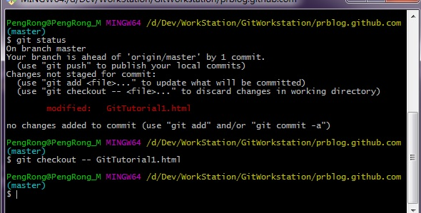

Window下面安装
Git
；安装完成后在开始菜单找到"Git"->"Git Bash",跳出一个命令行窗口的东西，说明git安装成功。
安装完成后，还需要最后一步进行必要的设置:我们替换成我们的github用户名和邮件地址
$ git config --global user.email "email@example.com"
$ git config --global user.name "Your Name"
注意git config命令的--global参数 : 用了这个参数，表示你这台机器上所有的Git仓库都会使用这个配置，当然也可以对某个仓库指定不同的用户名和Email地址。
cd desktop/TestGit；进入桌面下TestGit目录
git init 初始化一个git仓库
输出这个信息说明初始化一个空的git仓库：Initialized empty Git repository in C:/Users/Administrator/Desktop/TestGit/.git/

可以看到图片中TestGit目录下新增了一个隐藏目录.git,这个目录一般情况下是隐藏的，因为我打开了显示隐藏文件夹的选项，所以可以看到，他记录了我们git仓库所有更改记录。所以不要手动更改他。
如果你使用Windows系统，为了避免遇到各种莫名其妙的问题，请确保目录名（包括父目录）不包含中文。
首先这里再明确一下，所有的版本控制系统，其实只能跟踪文本文件的改动，比如TXT文件，网页，所有的程序代码等等，Git也不例外。版本控制系统可以告诉你每次的改动，比如在第5行加了一个单词“Linux”，在第8行删了一个单词“Windows”。而图片、视频这些二进制文件，虽然也能由版本控制系统管理，但没法跟踪文件的变化，
第一步： 往刚才新建仓库TestGit中新建一些文件，note.txt, show.html , javaDemo.java这三个文件存放在TestGit目录下而已；接下来要学习第一个git命令 : git status
可以看到执行这个命令后提示在当前git仓库下提示没有对它跟踪

第二步：
将刚才新建的三个文件添加到git仓库中，目的就是为了git版本系统跟踪所有这三个文件的所有更改记录。接下来需要学习第二个命令：git add。关于添加文件命令git add ，可以这样git add -A 提交所有变化（包括新创建，更新，删除的）; git add .（在Git2后和前面一样）; git add -u(提交被修改(modified)和被删除(deleted)文件，不包括新文件(new))；这三种比较常见的形式。当然还可以git add file1,file2,file3...
参考git add
git add . 将本地文件提交到暂存区，在暂存区的文件还可以reset删除提交。
git status 再看下状态,可以看到是把三个文件添加到暂存区
 <
<
git commit -m "First commit Git" 就完全把暂存区的文件提交到Git仓库了，同时通过git status 命令查看到当前暂存区是空白的也就是说明没有新的文件没有被跟踪。

第三步 ： 假如我对任何一个文件进行更改，比如note.txt.更改完之后同样用git status 命令就报文件被更改。然后通过git diff note.txt命令检查具体什么被更改了。
git status 这个命令随时让你掌握当前git系统处于什么状态
git diff note.txt 这个命令让你明白更改了什么

这个时候你就可以提交了,使用如下命令：
git add note.txt
git commit -m "commit learn git"
git status

第四步：
如果我们对文件的历史更改记录感兴趣的话，可以用git log 命令查看所有更新信息，git log命令显示从最近到最远的提交日志
命令： git log

利用git log 可以查看你所有的提交记录,那么可以利用这个信息 版本回退 ，在git中后悔药是git reset命令，比如回退到上个commit版本；语法形式：git reset --hard HEAD^^^ 其中多少个^表示回退到第几个版本，只有一个^表示回退到上一个版本，也就是上一个提交版本；head表示当前版本
git reset --hard HEAD^

git reset --hard命令可以使用每次commit id进行回退或者到我删除的版本；语法形式 git reset --hard commit id号。比如
git reset --hard d0dab8b 这个id号不用全写只要写5 6位即可，下面这幅图是先回退到第一次提交版本后有回到最新的版本

如果文件修改后从工作目录区add命令提交到了暂存区想撤销add操作，可以使用git reset head <file > 命令将这个文件将从暂存区（暂存区也叫稳定区）退出，回到工作目录区；但是所有的更改还是存在的。

对于文件已经提交到本地版本库跟踪的文件，然后对他修改没有进行add操作。现在对这个修改只有两个命令可用，第一将文件更改通过add命令提交到暂存区进而commit，第二是如果你对这个修改不满意。可以通过git checkout -- < file >... 命令丢弃所有更改以取得和本地git仓库记录的一致（要慎用），这个命令是对处于版本库跟踪下文件，在工作区进行了修改，然后撤销我工作区修改的一个命令。一旦执行这个命令将所有自上次add操作之后所有修改都会消失，但是上次add操作提交到stage区的操作还是存在。如果是原来没有被跟踪的新文件通过add命令将文件提交到暂存区(稳定区),然后通过git reset head <file > 命令退回到工作区(不稳定区) ，只有一种提示：通过add命令提交到暂存区。
示例：该命令会不提醒确认直接将工作区的所有更改(未add 操作)直接铲除
Git和其他版本控制系统如SVN的一个不同之处就是有暂存区的概念。
就是你在电脑里能看到的目录，比如我的learngit文件夹就是一个工作区：
工作区有一个隐藏目录.git，这个不算工作区，而是Git的版本库。Git的版本库里存了很多东西，其中最重要的就是称为stage（或者叫index）的暂存区，还有Git为我们自动创建的第一个分支master，以及指向master的一个指针叫HEAD。

分支和HEAD的概念我们以后再讲。前面讲了我们把文件往Git版本库里添加的时候，是分两步执行的：
第一步是用git add把修改文件和新增文件添加进去到stage，实际上就是把文件修改添加到暂存区；
第二步是用git commit提交更改，实际上就是把暂存区的所有内容提交到当前分支。
因为我们创建Git版本库时，Git自动为我们创建了唯一一个master分支，所以，现在，git commit就是往master分支上提交更改。你可以简单理解为，需要提交的文件修改通通放到暂存区，然后，一次性提交(commit)暂存区的所有修改到mster分支。俗话说，实践出真知。现在，我们再练习一遍，先对note.txt做个修改，比如加上一行内容：我叫小彭；然后在工作区新增一个文本文件叫readme.md,内容随便写
我们先用git status 命令检查状态
 可以看到当前有一个新建文件待跟踪和一个修改后的文件待进入stage区，
git add .
命令实际上就是把要提交的所有修改放到暂存区（Stage），然后，执行git commit就可以一次性把暂存区的所有修改提交到分支。然后我们执行add，commit操作将两个文件加到git仓库里面。
可以看到当前有一个新建文件待跟踪和一个修改后的文件待进入stage区，
git add .
命令实际上就是把要提交的所有修改放到暂存区（Stage），然后，执行git commit就可以一次性把暂存区的所有修改提交到分支。然后我们执行add，commit操作将两个文件加到git仓库里面。

管理修改
实验这样一个流程
一次修改 -> git add -> 再次修改 -> git commit
一次修改 先在note.txt文件加一行,first
在学习git操作，联系我QQ:1557862201
learn git
learn java
learn Python
我叫小彭
为什么说Git管理的是修改，而不是文件呢？
现在，假定你已经完全掌握了暂存区的概念。
first
git add 操作
用git status 命令结果输出如下：

说明note.txt文件已经被修改
然后 执行
git add . 操作
命令将note.txt文件中first行添加到stage中

执行完
git add .
命令后，再次执行
git status
命令

可以看到更新的记录到了stage区等待commit
再次修改操作： note.txt文件往其中加一行，second；
在commit前git status检查当前状态

说明第二次修改还处于工作目录区，没有在stage区
注意：现在是一个修改提交到了stage区，后一个修改还在工作目录区等待add到stage区
git commit 操作
并git status

比较前后两次git status的不同，发现后一次修改还在工作区没有被提交，第一次修改已经提交到git版本控制系统
错误发生在工作区
因为错误发现得很及时，就可以很容易地纠正它。有两种方法修正：

git checkout -- file命令中的--很重要，没有--，就变成了“切换到另一个分支”的命令，我们在后面的分支管理中会再次遇到git checkout命令。
错误发生在暂存区
现在你将所有修改完成了，文档通过git add操作提交到stage区域了。
现在错误发生了：
庆幸的是，在commit之前，你发现了这个问题。用git status查看一下，修改只是添加到了暂存区，还没有提交。

解决办法：
Git同样告诉我们，用命令git reset HEAD file（ git reset head note.txt）可以把暂存区的修改撤销掉（unstage），重新放回工作区有两种处理方法：
错误发生在本地git仓库
已经提交了不合适的修改到本地版本库时，想要撤销本次提交，
版本回退
就可以,见上面所写
错误发生在远程git仓库
提交推送到远程版本库,真的很惨了。你没有权限撤销了。
同步到远程git仓库
现在的情景是，你已经在本地创建了一个Git仓库后，又想在GitHub创建一个Git仓库，并且让这两个仓库进行远程同步，这样，GitHub上的仓库既可以作为备份，又可以让其他人通过该仓库来协作，真是一举多得. 本地git仓库内容同步到远程git仓库
从远程git仓库克隆到本地电脑
登陆GitHub，创建一个新的仓库，名字叫cloneDemo:

我们勾选
Initialize this repository with a README
，这样GitHub会自动为我们创建一个README.md文件。创建完毕后，可以看到README.md文件：

现在，远程库已经准备好了，下一步是用命令git clone从远程git仓库克隆一个本地库：
git支持两种协议SSH,Https两种，所以同一个项目有两个路径。